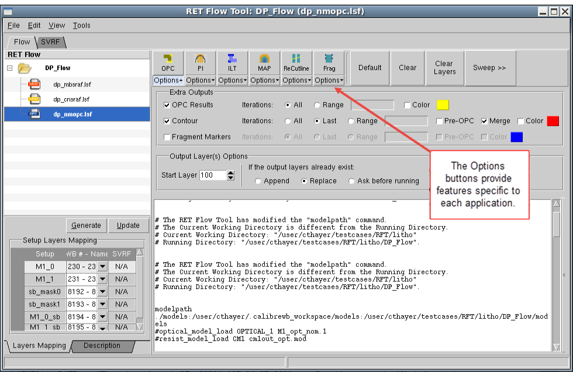
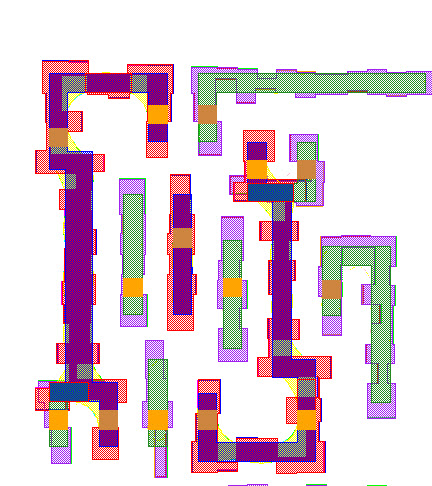

You import the
Calibre nmOPC session into the RET Flow Tool.
Procedure
- In the RET Flow Tool, add
an existing nmOPC session file by choosing .
- In the dialog box, choose
the .lsf file of interest and click OK.
The session is loaded into
RFT with some default settings.
Figure 1. nmOPC Session
- Click the OPC button
in RFT to generate OPC only on the small area in which you previously
zoomed in.
OPC is generated and layers
are added to the design.
Figure 3. OPC Output on Design